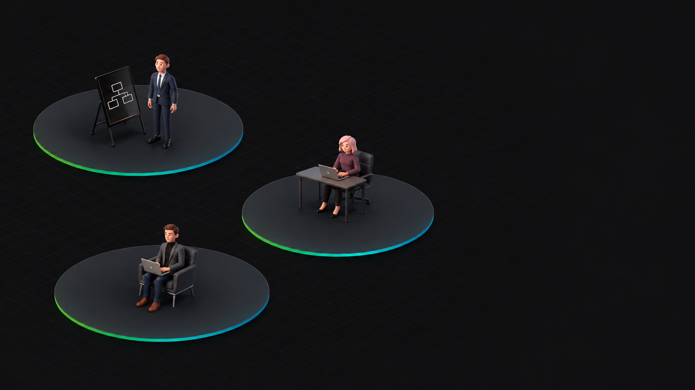

VIBE CODING
原型完成靠预览与反馈，逐步明确想法
用户
帮我把销售查询结果做成图表。
反馈
换成折线图，再加一个时间筛选。
销售趋势最近 30 天 ▾
折线图 + 时间筛选
交付产物可运行图表原型，需求更清晰
模型部署与底层资源管理由服务承接，应用侧聚焦业务逻辑
按输入和输出 Token 使用量计费
同一个 CodeArts Agent、同一条需求，对照索引启用前后的检索路径
云上管理企业知识、摄入文档，让 Agent 基于企业资料回答研发问题
检索与引用相关知识片段
Leader 编排，前端与后端专家分工实现、同步接口并协作联调

Backend Expert
Frontend Expert
Teammate · 示例任务
为 ChatBI 增加图表：通过效果反馈探索，按明确规格实现与验收
帮我把销售查询结果做成图表。
换成折线图，再加一个时间筛选。
spec.md日期映射横轴，销售额映射纵轴；保留数据权限。
design.md图表组件读取查询结果；时间筛选与查询联动。
tasks.md实现字段映射、折线图、筛选与异常处理，并补测试。
以现有应用为起点，用自然语言驱动功能迭代
通过 DevOps Skill 编排华为云专项技能，完成部署、巡检、排障、安全检查与成本分析
部署方案、资源准备、应用发布与验收
terraform-generator生成部署方案deployment-task-management编排应用发布ecs-manage检查实例与验收定时巡检实例状态、性能指标与日志采集，汇总异常
ecs-manage检查实例状态ces-ecs-monitoring查看性能指标lts-log-inspector检查日志采集网络与端口诊断、创建及发布失败分析、日志查询
vpc-network-diagnosis-management诊断网络与端口ecs-manage检查实例与创建状态deployment-task-management分析发布失败lts-log-inspector查询关联日志公网暴露规则、敏感端口、关联资源检查
network-query查询网络暴露规则vpc-network-diagnosis-management检查敏感端口ecs-manage核查关联实例账单查询、按需询价、利用率与闲置 EIP 分析
solution-ops查询账单与按需价格eip-cost-optimizer分析闲置 EIPces-ecs-monitoring查看资源利用率| 运维场景 | 核心能力 | 涉及的 Skills | 示例任务 |
|---|---|---|---|
| 应用部署 | 部署方案、资源准备、应用发布与验收 | terraform-generatordeployment-task-managementecs-manage | 将 ChatBI 部署到华为云 |
| 定时巡检与监控 | 定时巡检实例状态、性能指标与日志采集，汇总异常 | ecs-manageces-ecs-monitoringlts-log-inspector | 每小时巡检 ECS 状态、性能指标与日志 |
| 故障定位 | 网络与端口诊断、创建及发布失败分析、日志查询 | vpc-network-diagnosis-managementecs-managedeployment-task-managementlts-log-inspector | 定位业务端口无法访问的原因 |
| 安全检查 | 公网暴露规则、敏感端口、关联资源检查 | network-queryvpc-network-diagnosis-managementecs-manage | 检查应用相关资源的网络暴露风险 |
| 成本分析与优化建议 | 账单查询、按需询价、利用率与闲置 EIP 分析 | solution-opseip-cost-optimizerces-ecs-monitoring | 分析费用与资源使用，提出优化建议 |